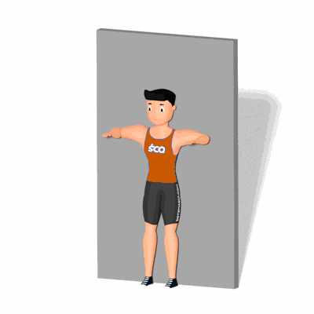

Rotação Externa com Abdução de Ombro na Parede

O exercício irá trabalhar a mobilidade dos ombros, preparando para atividades físicas que dependem bastante das articulações do ombro.
Ficha Técnica
Tipo: Mobilidade
Grupo Muscular: Ombro
Aparelho: Nenhum
Músculos: Nenhum
Como realizar
- Fique em pé com corpo ereto e de costas a uma parede;
- Encoste as costas na parede, abra os braços e flexione os cotovelos 90° para cima, esse será sua posição inicial;
- Inicie o movimento elevando os braços acima da cabeça tentando manter encostado na parede;
- Retorne a posição inicial lentamente e em seguida realize uma rotação do antebraço para frente;
- Depois retorne a posição inicial e repita os movimentos.
 RC STORE
RC STORE